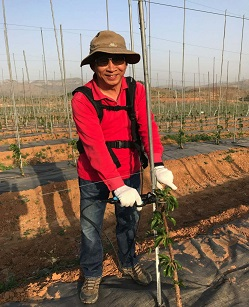

河北农业大学园艺学院教授、博士生导师：孙建设

孙建设，河北农业大学园艺学院教授、博士生导师，“太行山道路”首批实践者中的一员，用累累硕果扮靓太行山的科技“特派员”。他用科技的力量将荒山秃岭丢进历史，让贫穷困苦成为过去；把绿水青山留给未来，使富裕文明变成现实。
他首先是一位教授，35年来淡泊名利，倾心科研、上下求索；他又是一名海归，国外深造，一心求变，开创了中国苹果种植的新纪元。据不完全统计，国内采用孙建设创建的现代新型矮砧密植栽培模式的苹果产区面积远远超过了100万亩。如今，苹果产业园除了遍布燕赵境内外，新疆阿克苏、伊犁，山西运城，陕西千阳，山东荣成，河南三门峡，甘肃庆阳，贵州威宁等地都有孙建设的科技团队支撑建立的现代苹果园区，覆盖全国4个苹果主产区的11个省份，有效带动了当地及周边地区苹果产业的换代升级。